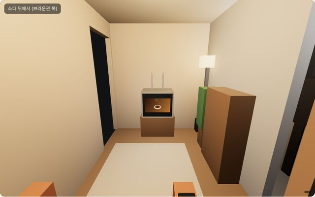
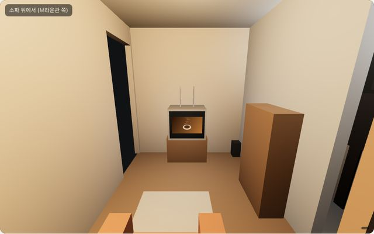
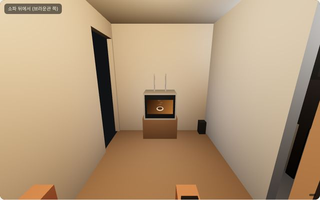

1위 · 브라운관 + 거실추천 145점
+ 러그·스탠드·화분·선반
집다움 5안주 메시지 4인터랙션 인식 4동선 여유 4준비 부담 적음 3문 열면 켜짐 연출 5화면 보기 3실물 준비 3
B 영상을 브라운관 TV로 보여 줄 때와 프로젝터로 보여 줄 때를 각각, 가구를 거의 비운 안부터 가득 채운 안까지 4가지씩 모두 8가지로 만들어 비교했습니다. 아래 썸네일은 3D 미리보기(같은 치수)로 찍은 것이고, 추천한 4가지는 Unreal에서 실제로 지어 렌더와 워크스루를 뽑았습니다.
러그·스탠드·화분·선반을 가벽 쪽에만 둬서 '누구나 아는 거실'로 읽히면서도 소파 주변이 깨끗합니다. 문을 열면 작은 TV가 지지직 켜지는 장면이 인터랙션의 시작과 가장 잘 맞고, CCTV에서 담요·리모컨이 다른 물건과 겹치지 않습니다.
택배 상자·빨래 바구니·행거·슬리퍼로 '익숙해진 내 집'을 가장 직접적으로 보여 줍니다. 메시지는 가장 강하지만 준비물이 많고, 화면 속이 어수선해 보일 수 있습니다.
가구는 본안과 같고 화면만 왼쪽 벽 160cm로 키운 안. 소파에서 본 화면 각도가 브라운관의 2배 이상(약 37° vs 16°)이라 영상이 잘 보이고 시연 영상으로 찍기 쉽습니다. 'TV가 켜진다'는 느낌은 약해집니다.
소파·담요·리모컨만 있는 가장 단순한 안. 만들기는 가장 쉽지만 '집'이라기보다 상영실처럼 보여, 안주의 메시지가 약합니다. 비교 기준으로 남겼습니다.
썸네일 아래 버튼으로 시점을 바꿀 수 있습니다. 자동 검사: 8가지 모두 가구가 동선에서 44cm 이상 떨어져 있고, 문이 열리는 범위에 걸리지 않으며, 소파에서 화면을 가리지 않습니다.








각 항목 1~5점. 작품의 핵심인 '집다움', '안주 메시지', '문을 열면 TV가 켜지는 연출'은 두 배로 계산했습니다. 점수는 판단을 돕는 정리이고, 같은 점수일 때는 CCTV에서 인터랙션 물건이 잘 보이는 쪽(거실)을 앞에 뒀습니다.
| # | 변형 | 집다움 ×2 | 안주 메시지 ×2 | 인터랙션 인식 ×1 | 동선 여유 ×1 | 준비 부담 적음 ×1 | 문 열면 켜짐 연출 ×2 | 화면 보기 ×1 | 실물 준비 ×1 | 합계 |
|---|---|---|---|---|---|---|---|---|---|---|
| 1 | 브라운관 + 거실 | 5 | 4 | 4 | 4 | 3 | 5 | 3 | 3 | 45 |
| 2 | 브라운관 + 생활감 | 4 | 5 | 4 | 4 | 3 | 5 | 3 | 3 | 45 |
| 3 | 프로젝터 + 거실 | 5 | 4 | 4 | 4 | 3 | 3 | 5 | 3 | 43 |
| 4 | 브라운관 + 1인 자리 | 4 | 5 | 3 | 4 | 2 | 5 | 3 | 3 | 43 |
| 5 | 프로젝터 + 생활감 | 4 | 5 | 4 | 4 | 3 | 3 | 5 | 3 | 43 |
| 6 | 브라운관 + 기본 | 2 | 3 | 5 | 5 | 5 | 5 | 3 | 3 | 41 |
| 7 | 프로젝터 + 1인 자리 | 4 | 5 | 3 | 4 | 2 | 3 | 5 | 3 | 41 |
| 8 | 프로젝터 + 기본 | 2 | 3 | 5 | 5 | 5 | 3 | 5 | 3 | 39 |

위에서부터 추천 1 브라운관+거실, 추천 2 브라운관+생활감, 추천 3 프로젝터+거실, 참고 프로젝터+기본 · 소파 뒤 / 문에서 본 집 / CCTV
추천 4가지 동시 비교 · 같은 동선 30.5초
추천 1 · 브라운관 + 거실
추천 2 · 브라운관 + 생활감
추천 3 · 프로젝터 + 거실
참고 · 프로젝터 + 기본